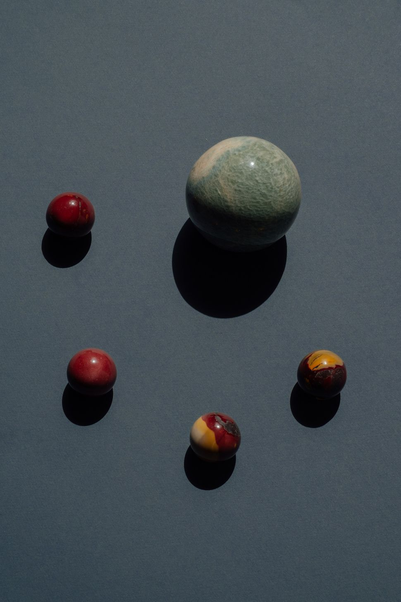

Notes from a Life in Progress
Thoughts, discoveries, and tiny joys collected along the way
Read the latestHey, I’m Elianna
Welcome to my corner of the internet, where curiosity leads, creativity follows, and every day offers something worth noticing.


Tide returns.
Stone steadies.
Moss softens.
Water carries light.

I’m a writer, builder, and perpetual beginner. I started this journal to document the small shifts that shape a meaningful life: creative experiments, work in progress, and the occasional snack-fuelled epiphany. Thanks for reading. I’m glad you’re here.

January 30

Life Lately
Life lately has felt like a collection of small, quiet turning points, the kinds you almost miss while you’re busy chasing the bigger ones.
I’ve been noticing how the days stack differently when I slow down just enough to pay attention: the way sunlight pools on my desk in the late afternoon, the conversations that linger longer than expected, the unexpected calm that follows a week of chaos.
Read the full postFrom the journal
 On learning to float
On learning to float
 A chair by the window
A chair by the window
 Rest, reconsidered
Rest, reconsidered
 Tiny rituals, green stones
Tiny rituals, green stones

Stay in the Loop
New posts, personal updates, and the occasional behind-the-scenes moment, delivered to your inbox.

Let’s stay in touch
Whether it’s a question, a kind word, or a collaboration idea, I’d love to hear from you.
- hello@example.com